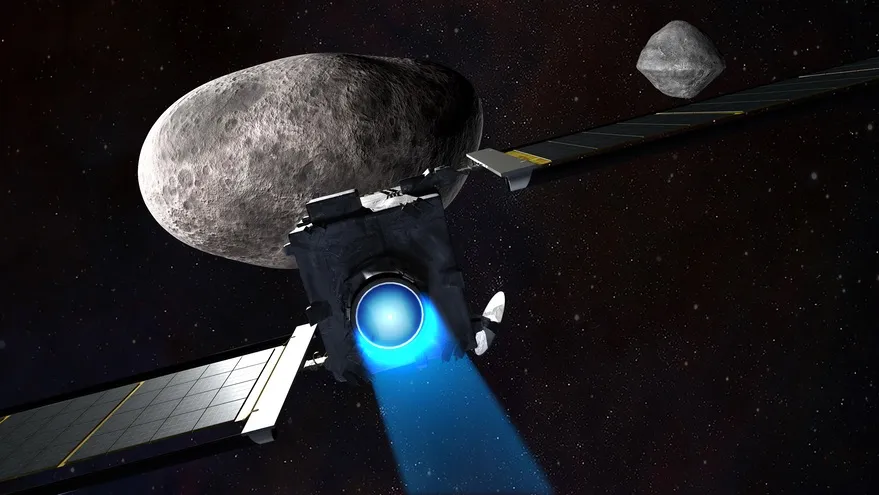
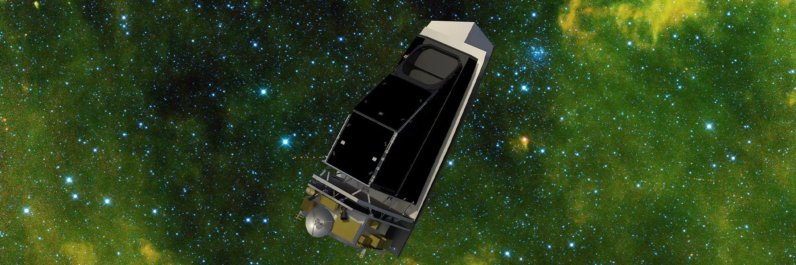

Rocks from space that can cause extinction
Our world is constantly bombarded by small rocks from space. These small rocks can never never reach the ground becasue they burn up in the atmosphere. But what if the rock was the size of a mountain? And its able to reach the ground? These type of rocks are called asteroids. Evidence suggests that a asteroids hitting the earth is the reason why the dinosours are extinct. Knwoing the danger it can bring to use humans, Nasa has been investing in a planetary defense system to attempt to protect us from asteroids.
DART
DART (Double Asteroid Redirection Test) is the world's first spacecraft to deflect asteroid using kinetic impactor. It was launched on November 24, 2022 which traveled over 10 months before colliding with asteroid moonlet Dimorphos it was for testing purposes. It showed lots of potential to defelect asteroids but more research is required to be more full proof.
NEO surveyor
NEO Surveyor (Near-Earth object Surveyor) is used to discover and characterize most of the potentially hazardous asteroids within 30 million miles of Earth's orbit. It does this by using a telescope that operates in two heat-sensing infraraed wavelengths. After it's launch it will survery asteroids that are 140 meters or more that can cause significant damage to Earth.
# Comments
comment 1
comment 2
comment 3